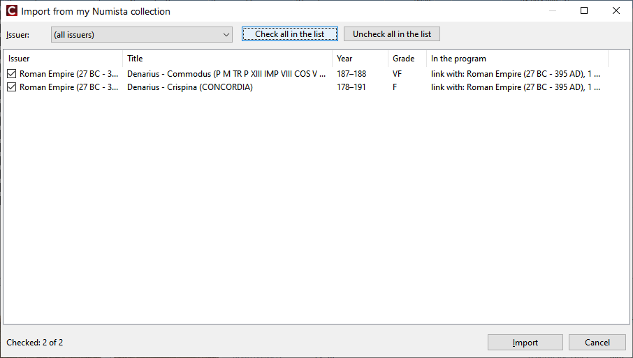

З чого почати
Виберіть рядок, що описує вас. Кожен шлях веде до одного результату: ваша колекція в програмі, пов'язана з каталогом Numista, з тиражем, характеристиками й зображеннями.
1. Моя колекція на uCoin
- На сайті uCoin експортуйте колекцію в Excel (
.xlsx) та імпортуйте файл: Імпорт з uCoin. - Цього досить, щоб вести облік: країни, роки, стан, ціни, ваші фото.
- Потрібні тираж, характеристики й зображення з каталогу? Зареєструйтеся на Numista й отримайте безкоштовний ключ API: Numista: реєстрація та ключ API. Далі Auto-link/Автозв'язок — зв'язок монет.
- Колекція на uCoin змінилася? Експортуйте й імпортуйте її знову — зв'язки з Numista і фото зберігаються.
2. Моя колекція на Numista (античні, римські, кельтські монети…)
На uCoin немає каталогу античних монет, на Numista є. Якщо ви додаєте свої монети на Numista:
- Зареєструйтеся на Numista й отримайте ключ API, введіть його в Numista → Connect / Settings/Numista → Підключення / налаштування.
- Numista → Import from my Numista collection/Numista → Імпорт з моєї колекції Numista — виберіть емітента (наприклад Roman Empire), позначте предмети й імпортуйте: Імпорт (розділ Імпорт з вашої колекції Numista).
- Монети приходять уже пов'язаними, із зображеннями з каталогу; діапазони років (
164–180) і роки до н. е. зберігаються. - Додайте власні фото в картці монети — поруч із зображеннями з каталогу.

Скриншот: images/11-numista-import.png
Римські денарії (та інші античні монети) без uCoin
Ви знаходите чи збираєте римські денарії, а акаунта на uCoin немає? Це шлях 2, крок за кроком:
- Акаунт Numista і ключ API — Numista: реєстрація та ключ API (близько 5 хвилин).
- Додайте свої денарії на сайті Numista. Знайдіть тип у каталозі Numista (імператор, напис реверсу), натисніть Add to my collection, виберіть стан. Там же можна завантажити власні фото монети — програма їх теж забере.
- Індекс рідкісності. На сторінці типу на Numista вказано його індекс рідкісності (0–100). Запишіть його в приватний
коментар свого примірника: просто число, наприклад
97(або97;моя примітка). - Імпорт у програму: Numista → Import from my Numista collection/Numista → Імпорт з моєї колекції Numista, емітент Roman Empire, позначте предмети, Import/Імпортувати. Нові денарії, додані на Numista пізніше, — імпортуйте ще раз, пропонуються лише нові.
Що ви отримуєте в програмі:
- Ваше фото поруч із зображенням з каталогу в картці монети — легко порівняти стерту монету з гарним каталожним екземпляром; у подробицях монети кнопка ⇄ перемикає між ними.
- Найрідкісніші монети — вгорі: клацніть заголовок колонки Rarity/Рідкість — список відсортується за індексом рідкісності. На Numista відсортувати колекцію за рідкісністю неможливо.
- Імператори як періоди в дереві ліворуч, діапазони років (
164–180), вага, розмір, посилання на каталоги (RIC) у подробицях; резервна копія всієї колекції одним файлом.
3. І там, і там: сучасні монети на uCoin, античні на Numista
- Спершу імпорт з uCoin (шлях 1).
- Потім імпорт з вашої колекції Numista (шлях 2). Монети, що є і там, і там, зв'язуються, а не дублюються.
- Наступні імпорти з uCoin зберігають монети, що прийшли з Numista.
4. Ні uCoin, ні Numista
Додавайте монети самі: Collection → Add/Колекція → Додати, а для наступних років тієї ж монети — Add from sample/Додати за зразком (Ctrl+Ins): лише змініть рік. Періоди й валюти додаються до довідників, коли ви їх вводите. Numista знадобиться й потім: Link manually/Пов'язати вручну знайде монету в каталозі й завантажить її характеристики та зображення.